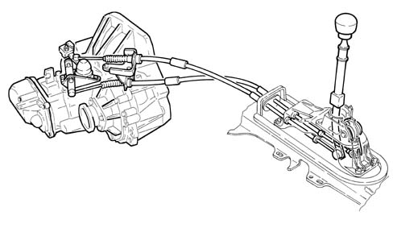
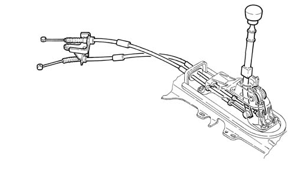

2125C manual gearbox external control (cables)
- Path
- Descriptions > 21 GEARBOX > 2125 MANUAL GEARBOX EXTERNAL CONTROLS > 2125C manual gearbox external control (cables)
- Kind
- system description
- Applies to
- engines: 1.6 TS , 1.8 TS, 2.0 JTS, 2.5 V6, 3.2 V6, 1.9 JTD 8v , 2.0 JTS, 2.4 JTD 10v; all production periods
- Interactive page
- https://sloeber94.github.io/elrnDB-a156/en/#/3232900
Applies to: engines: 1.6 TS , 1.8 TS, 2.0 JTS, 2.0 JTS; all production periods
DESCRIPTION
Introduction
The twin cable external control is made from plastic materials with excellent properties (resistance to fatigue, self-lubrication capacity, reduced weight)
This type of control combined with a distribution of the inertia masses towards the gearbox has made it possible to achieve:
- a high level of driving comfort due the action of filtering the vibrations on account of the lightness of the external control components
- precise manoeuvring and a reduction of the matching clearances.

Applies to: engines: 2.5 V6, 3.2 V6, 1.9 JTD 8v , 2.4 JTD 10v; all production periods
DESCRIPTION
Introduction
The twin cable external control is made from plastic materials with excellent properties (resistance to fatigue, self-lubrication capacity, reduced weight)
This type of control combined with a distribution of the inertia masses towards the gearbox has made it possible to achieve:
- a high level of driving comfort due the action of filtering the vibrations on account of the lightness of the external control components
- precise manoeuvring and a reduction of the matching clearances.
The external control is equipped with an inhibitor device for the engagement of Reverse gear which, by means of a travel inhibitor during selection, guarantees greater safety against accidental manoeuvres.
